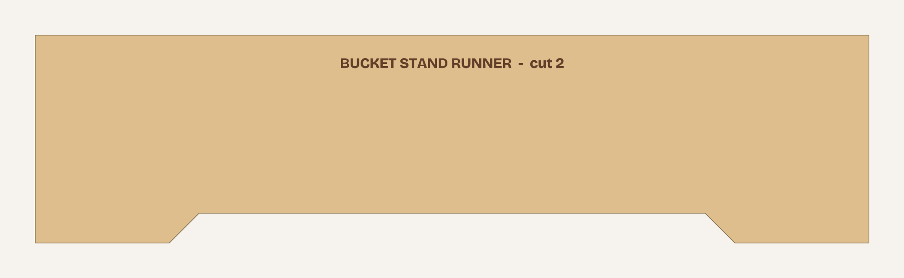

Runner stands on edge; 1/2 in relief between the feet
1x4 (3/4 × 3-1/2 in, 19 × 89 mm) × 14 in (356 mm)
B
2
Cleat inside each runner, flush with its top
3/4 × 3/4 in (19 × 19 mm) strip × 13 in (330 mm)
C
5
Slat all edges rounded
1x3 (3/4 × 2-1/2 in, 19 × 64 mm) × 13 in (330 mm)
Hardware
10 stainless wood screws, #8 × 1-1/4 in (4 × 32 mm): up through the cleats into the slats
6 stainless wood screws, #8 × 1-1/4 in: through the cleats into the runners, from the inside
No glue, no metal on top
Wood
Use a wood that is sold for sauna interiors where you live, such as aspen, alder or western red cedar. Choose clear boards without loose knots or resin pockets.
Made by DIVELUX, makers of handmade wool sauna hats · diveluxsaunahat.com · more free tools: diveluxsaunahat.com/pages/sauna-toolsCC BY 4.0 · Build at your own risk.
Cut two runners 14 in (356 mm) long from a 1x4. Cut the relief between the feet: 1/2 in (13 mm) deep, leaving a 2-1/4 in (57 mm) foot at each end, with 45° ends (trace the full-size template). The stand then rests on four feet and stays steady on a wet, uneven floor.
Cut two cleats 13 in (330 mm) long and fix each inside a runner, flush with its top edge, with three screws from the cleat side.
Cut 5 slats 13 in (330 mm) long. Round every edge and sand.
Set the runners 10-1/2 in (267 mm) apart outside to outside. Lay the slats across, 3/8 in (10 mm) apart, flush with the runner ends, 1-1/4 in (32 mm) of overhang at each side.
Turn it over and fix each slat with two screws up through each cleat. The screw tips stop about 1/4 in below the top.
Check every edge by hand. Leave it unfinished; let it dry out after each sauna.
Full-size runner template
svg/ and dxf/: the runner outline at 1:1 (356 × 89 mm) with its relief cut, for a laser, a CNC, or to print at 100% and trace. Red = cut, black = engraved label. Cut 2.

Use
Most sauna buckets are 8 to 12 in across; the top is 13 in (330 mm) by 14 in (356 mm). The gaps let spilled water run through and the wood dry. Put the stand where nobody steps backward onto it, and not against the heater or its guard.
Safety
Build at your own risk. These are hobby plans, not engineered drawings, and nobody has checked them for your bench, your wall or your sauna.
Check that nothing can burn or pinch: no metal on a surface skin can touch, no sharp edges, no gaps that can trap a finger.
Round over or sand every edge you can touch. Leave wood for the hot room unfinished: no varnish, paint or stain.
Hot room or not: screws and other metal get hot in a sauna. Keep every head below the surface or on the hidden side.
It is a stand for a bucket, not a step. Do not stand on it.
Made by DIVELUX, makers of handmade wool sauna hats · diveluxsaunahat.com · more free tools: diveluxsaunahat.com/pages/sauna-toolsCC BY 4.0 · Build at your own risk.